| 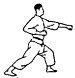 | Oi Tzuki | Attacco con il pugno corrispondente alla gamba che avanza. Il piede scivola sul terreno in avanti a semicerchio. |
| 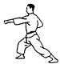 | Gyaku Tzuki | Attacco con il pugno opposto alla gamba avanti. Utilizza la rotazione dell’anca per potenziare il colpo. |
| Ren Tzuki | Doppio attacco di pugno senza avanzare. |
| Sanbon Tzuki | Triplo attacco di pugno senza avanzare. |
| 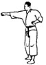 | Seiken Choku Tzuki | Attacco diretto di pugno con la parte Seiken. |
| Kizami Tzuki | Attacco veloce con il pugno anteriore, sfruttando la rotazione dell’anca e la spinta della gamba posteriore. |
| 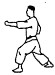 | Tate Tzuki | Attacco con il pugno verticale, ruotando l’avambraccio di 90°. Colpisce viso o plesso solare. |
| 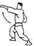 | Age Tzuki | Attacco montante di pugno, colpisce verso l’alto viso o collo. |
| 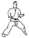 | Ura Tzuki | Attacco tipo uppercut con il pugno rivolto verso il basso. Colpisce viso, fianchi e plesso solare. |
| 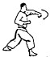 | Mawashi Tzuki | Attacco di pugno circolare con rotazione di 270°. Colpisce con Seiken viso o fianchi. |
| Kagi Tzuki | Attacco a uncino. Movimento a 90° con gomito piegato, colpisce fianchi o plesso solare. |
| 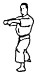 | Morote Tzuki | Attacco con entrambe le mani. Le braccia restano parallele all’impatto. |
| 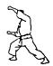 | Yama Tzuki | Attacco a U con entrambi i pugni. Colpisce simultaneamente viso (pugno superiore) e plesso solare (inferiore). |
| 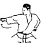 | Tettsui Uchi | Colpo a martello. Parte da sotto l’ascella opposta con rotazione di 180° e colpisce sul fianco. |
| 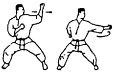 | Uraken Uchi | Colpo con il dorso del pugno. Ruotando l’avambraccio, colpisce viso, fianchi e plesso solare. |
| 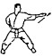 | Haishu Uchi | Colpo con il dorso della mano. Stessa esecuzione del Tettsui Uchi. |
| 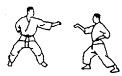 | Teisho Uchi | Colpo con la base del palmo. Usato per colpire il mento o deviare un attacco. |
| 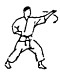 | Shuto Uchi | Colpo con il taglio della mano (lato mignolo). Colpisce frontalmente usando il gomito come perno. |
| 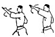 | Haito Uchi | Colpo con il taglio della mano (lato pollice). Stessa esecuzione dello Shuto Uchi. |
| 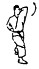 | Mae Empi Uchi | Colpo di gomito in avanti. |
| Tate Empi Uchi | Colpo di gomito verso l’alto. |
| 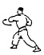 | Mawashi Empi Uchi | Colpo di gomito con movimento circolare. |
| 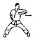 | Yoko Empi Uchi | Colpo di gomito laterale. |
| 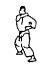 | Ushiro Empi Uchi | Colpo di gomito all’indietro. |
| Otoshi Empi Uchi | Colpo di gomito verso il basso. |